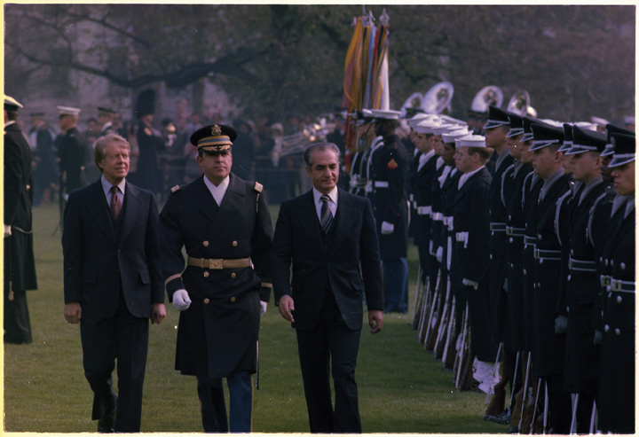
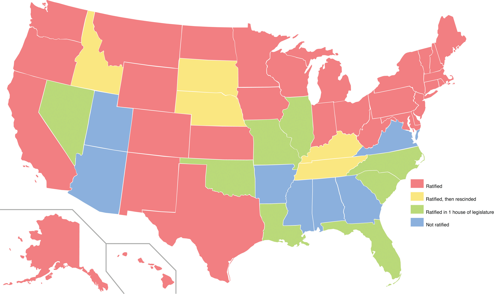

The presidential election of 1976 was a contest between Republican incumbent Gerald Ford and Democrat Jimmy CarterA naval officer and farmer in Georgia who entered politics and became the thirty-ninth president of the United States after defeating Gerald Ford in the 1976 election. Carter’s presidency was marked by economic and international turmoil, and he left office after a landslide defeat to Ronald Reagan. While president, Carter maintained a reputation for diligence and honesty. Although many disagree about his record while in the Oval Office, there is widespread agreement that Carter has become the most successful former president in advancing a variety of important causes after leaving office. of Georgia. Ford had barely survived a challenge in the Republican primary from California’s Ronald Reagan, and few gave the president much of a chance to win reelection. Ford’s unpopularity began with his pardon of Nixon, even while many of Nixon’s aides were serving jail terms for crimes they had committed on behalf of their former boss. Ford then committed a number of blunders, such as mistakenly denying that Eastern Europe was dominated by the Soviet Union in a failed attempt to answer critics who were angered by the Helsinki Accords.
The biggest issue on voter’s minds in the fall of 1976 was the economy. Carter enjoyed a tremendous early lead as the economy had only worsened since Ford took office. Democrats portrayed Carter as a “Washington outsider,” a populist image that resonated among voters who had grown tired of the daily revelations of political corruption. Carter’s own desire for full disclosure almost destroyed this image when the candidate admitted that he had felt lust for women beyond his wife. Although many agreed that Carter was honest, the electorate was not impressed by either candidate. Only half of eligible voters even showed up to the polls. In the end, Carter won 297 votes in the Electoral College to Ford’s 240. The Democrats also won nearly two-thirds of Congress, giving Carter an opportunity to enact the legislation he promised would turn the economy around.
Carter began his presidency with high approval ratings, quickly delivering on promises to cut costs by reducing the perks he and his staff received and selling the presidential yacht. His symbolic decision to eschew the customary limousine ride and walk from the capitol to the White House on the day of his inauguration played like a scene from the Mr. Smith Goes to Washington. Like the protagonist in that 1940s film—an average citizen suddenly elevated to office—Carter’s good intentions and work ethic did not translate to legislative success. The president’s method of creating his own panels of experts to draft model legislation alienated key members of Congress because it excluded them from the decision-making process. Carter chastised Congress for failing to recognize that his experts were better equipped to draft policy, a message that further alienated the president from lawmakers.
Americans remained frustrated by continued economic stagnation and high gas prices during the Carter administration. In 1977, the trans-Alaskan pipeline was completed and the Department of Energy was created, but the energy crisis continued. Driving cars with smaller engines and lighter chassis were among many of the adjustments Americans made, yet the nation remained dependent on foreign oil. To make matters worse, the changes made by US automakers came only after foreign competitors entered the market. Chrysler would have been forced into bankruptcy had it not been for a federal bailout of $1.5 billion. Some Americans expressed resentment toward the Middle East and oil companies that had profited from America’s economic problems.
In many ways, Carter was better equipped to address these problems than any other president before him. He was an intelligent and detail-oriented workaholic who surrounded himself with experts. He responded to problems directly and avoided the empty platitudes that typified politicians. His speeches made use of scholarly reports and statistics he spent each night reading. And, like Carter himself, these speeches were incredibly forthright and detail oriented. Carter attempted to address each of the challenges he inherited from the energy crisis to deindustrialization, stagflation, budget deficits, and global conflicts including terrorism.
From the perspective of the president’s critics, each of these problems had only grown worse under Carter’s watch. Some accused the president of using a scattergun approach, trying many measures that actually contradicted one another. Carter’s varied attempts to control inflation included voluntary wage and price freezes, modifications of Federal Reserve policy, and reductions in government spending. Carter also deregulated trucking, railroad, and shipping industries by taking away federal controls for rates and fees in hopes of encouraging both competition and profitability.
Figure 12.20
President Carter and the shah of Iran together during an official state visit in November 1977. Just over one year later, the shah would be forced out of Iran and seek refuge in the United States. The result was another spike in oil prices and a hostage crisis that would last until the final day of Carter’s presidency.
Although many of President Carter’s initiatives received bipartisan support and some likely helped to prevent matters from becoming even worse, each of these decisions came with a political price. For example, Carter’s 1979 decision to reduce the money supply helped to reduce inflation, a practical long-term strategy supported by most economists. Carter recognized that years of simply printing more money to mask the country’s economic problems would have disastrous long-term consequences. In the near term, however, it reduced the money supply for businesses and consumers. It was a bitter pill, but one Carter decided could not wait. Unemployment jumped from 6 to 8 percent, while the sudden shortage of capital meant that even banks could not obtain loans for less than 15 percent. As the next presidential election approached, the country remained mired in a recession, and even those with steady jobs could not obtain loans for homes or cars with interest rates below 20 percent.
The recession peaked in mid-1979. Carter responded to the growing crisis by inviting various experts and local leaders to the presidential retreat at Camp David to discuss the problems their community faced and brainstorm possible responses. Carter then addressed the nation with a frank overview of the challenges that needed to be addressed. Most Americans initially valued the candor of the president’s July 1979 address in which he warned that a “crisis of confidence” had replaced the typical can-do attitude of Americans. Carter outlined areas in which the nation was declining, denounced the irresponsibility of those who allowed private and public debt to spiral out of control, and called on each citizen to accept his or her culpability for their nation’s ills. Americans were used to this sort of rhetoric about the threat of America’s decline from presidential candidates. But they had never heard such a message from a sitting president. For many, the talk seemed reminiscent of a tough coach’s halftime speech to his team, except that he ended the speech without offering a game plan or rousing call for victory.
A half-century of Democratic presidents from Franklin D. Roosevelt to John F. Kennedy had offered inspiring but often-ambiguous speeches in response to the crises of their days. Carter’s address contained none of this puffery, but it was also void of the reassurance the American people had come to expect from their president. Even worse, Carter’s speech failed to explain how he planned to correct the problems he outlined. Within days, even those who had praised Carter’s candor became defensive about the speech. Some even began to perceive it as an indictment of the American people. America was the greatest nation in the world, they exclaimed, precisely because of the very characteristics of hard work and thrift they felt the president had forgotten about. At this moment, one of the president’s advisers described the country as descending into “malaise.” Given the mood of the nation, it mattered little that Carter himself never used the word malaise in his speech. Fairly or not, Americans remembered the address as Carter’s “Malaise” speech. Despite the actual content of Carter’s message, the collective memory of Carter’s presidency began to be that of a leader who accepted the inevitability of the nation’s decline.
Women had been pressing for an authoritative and unambiguous federal law banning all forms of gender discrimination ever since Alice Paul first proposed the Equal Rights Amendment (ERA)Introduced in every session of Congress since 1923, the Equal Rights Amendment stated that “equality of rights under the law shall not be denied or abridged by the United States or by any state on account of sex.” The amendment passed Congress in 1972 but fell three states short of ratification. in 1923. This constitutional amendment had been introduced in every Congress since that year and had been endorsed by presidents such as Dwight Eisenhower and John F. Kennedy. However, the amendment did not pass Congress until 1972. Grassroots support for the amendment grew throughout the 1960s, and by 1970, even conservatives such as Nixon gave tentative verbal support to the ERA movement, even if he did little as president to support the amendment.
Figure 12.21
The vote regarding the Equal Rights Amendment reveals a regional trend, with the more conservative and evangelical states of the Southwest and Deep South opposing the amendment while most others states supported it.
Dozens of state legislatures had quickly ratified the Equal Rights Amendment when a countermovement led by conservatives such as Phyllis SchlaflyA conservative attorney and activist who rose to prominence with her nationwide campaign against the Equal Rights Amendment (ERA). Phyllis Schlafly viewed feminism as a dangerous assault on the family. Her opposition to the ERA succeeded by raising questions regarding the desirability of a government that could make no distinction of gender in its laws. attracted the attention of the nation. A lifelong anti-Communist crusader, Schlafly argued that the amendment, which guaranteed that “equality of rights under the law shall not be denied or abridged by the United States or by any state on account of sex,” would eliminate laws that protected women. Her conservative supporters agreed that mothers would lose preferential treatment in child custody laws if the amendment became law. Women would legally be subject to the draft, they argued, and might also be less likely to collect child support and alimony payments. “Why should we lower ourselves to ‘equal rights,’” Schlafly argued, “when we already have the status of special privilege.”
Proponents of the ERA disagreed with Schlafly’s analysis. They believed that Schlafly and her supporters were part of a reactionary movement that did not take the time to adequately explore the legal issues they raised. Schlafly herself claimed to support the goals of the ERA, yet she had often expressed reactionary views against feminists. She claimed that “women’s liberation” was nothing more than a euphemism for “radicals…who are waging a total assault on the family.” Despite these polemics against the women’s movement, ERA supporters found that Schlafly was gaining support and decided to address the questions she and her supporters raised. Would the ERA invalidate long-standing traditions such as the male-only draft? Would it invalidate recent progressive legislation that protected pregnant women and new mothers in the workplace? And would the amendment legalize practices few Americans in the 1970s supported, such as same-sex marriage?
Supporters of the ERA argued that like all legal decisions, these questions would be decided by the courts. Years later, almost two dozen states passed equal rights amendments to their constitutions without affecting any of the issues Schlafly and her supporters raised during the ERA debate. However, in the absence of simple and absolute answers to these questions, the rapid pace of ratification halted with only thirty-five of the needed thirty-eight states approving the amendment by the end of the seven-year deadline. Congress extended this deadline for another four years but it mattered little as no new states ratified the amendment and some actually reversed their previous support. As a result, the present legal status of the amendment is still debated. Some consider the issue settled by the passing of the deadline while others point out that other amendments have become law after centuries passed between proposal and ratification.
Carter made arms reduction a key part of his presidential campaign, repeatedly criticizing the limits of both Nixon and Ford in this regard. As president, Carter fared little better until a compromise agreement was reached in June 1979. This agreement was known as SALT II (Strategics Arms Limitations Talks of 1979) and reduced the permissible number of long-range missiles and bombers. Ratification of this treaty was delayed as Carter attempted to silence critics who believed that SALT II endangered the United States by “trusting” the Soviets to follow its unverifiable provisions. Arms reduction was a Soviet trick, some Americans believed, a clever way to get the nation to lower its defenses.
Despite these fears, moderates of both nations appeared to be gaining the upper hand as 1979 was coming to a close. Diplomats slightly modified the SALT II treaty, which was approved and might have passed through Congress had it not been for the Soviet invasion of Afghanistan in December 1979. Anti-Soviet sentiment ran so high following the invasion that no US politician could support an agreement with the Soviet Union without facing backlash at the polls. “Détente,” Ronald Reagan explained in a slap at Carter during the 1980 presidential election, “[is] what the farmer has with his turkey—until Thanksgiving Day.” Ironically, Reagan would later become one of the strongest proponents of nuclear disarmament in the nation’s history. In late 1979 and throughout the first years of the 1980s, however, nuclear disarmament was politically suspect. Although the SALT II treaty was never ratified, Carter’s efforts were not completely in vain. Many of the treaty’s principles were followed by both sides, and the treaty itself was used as a starting point for subsequent agreements.
President Carter also decided to return the Panama Canal Zone to Panama, a provision that was in the original agreement that he and many others believed was long overdue. However, this decision was also extremely unpopular with many Americans because of the wealth and military power that came with control of the canal. Dozens of conservative groups such as the American Conservative Union keyed into existing images of Carter as “weak” and joined populist anger over the return of the Panama Canal. These conservative organizations attracted hundreds of thousands of members and became a political force in upcoming elections. One of their many arguments was the accusation that Carter had “abandoned” the Panama Canal, believing that this showed an inability to defend the nation’s strategic interests.
Carter attempted to deflect criticism that he was naively abandoning the nation’s strategic global defense network by backing the development of an elaborate domestic missile defense system. The president’s plan called for the creation of an underground rail system that could covertly move intercontinental missiles so that they would be protected from Soviet attack. Carter also sought to disarm his critics by brashly criticizing the Soviets for sending a combat unit to Cuba. However, it was soon discovered that the unit had been stationed in Cuba for decades in accordance with a previous agreement between John F. Kennedy and Nikita Khrushchev. The Soviets recognized that much of this rhetoric was simply posturing, an important part of both US and Soviet politics. Among the more interesting communications between diplomats of both nations during these years were polite requests asking the other side to disregard much of what political leaders of both nations said in order to appease their constituents.
Figure 12.22

President Nixon meets with Mobutu Sese Seku, the authoritarian dictator of Zaire (today known as the Democratic Republic of the Congo). Mobutu seized power following a coup and the assassination of the democratically elected Patrice Lumumba. Because Mobutu was an opponent of communism, the United States disregarded many of his crimes against the people of Zaire.
One of the reasons that Carter had been portrayed as “soft” on Communism was his refusal to back certain right-wing regimes that were fighting left-wing groups around the globe. The Ford administration had followed the Cold War philosophy of the Nixon and Johnson administrations, supporting any regime that opposed Communist forces regardless of that regime’s own shortcomings. This was certainly the case in Angola where a democratically supported Marxist rebellion had been fighting for independence from Portugal for decades. The Portuguese withdrew from the region in 1975, leading to a civil war between the left-wing Popular Movement for the Liberation of Angola (MPLA) and the Nationalist Front. The Nationalist Front was backed by right-wing dictatorships such as Zaire and the apartheid government of South Africa.
As a result of Cold War alliances, this civil war in Angola became much more destructive. The Soviet Union and Cuba provided military aid for the MPLA while the United States provided aid to the Nationalist Front. Given the recent experience in Vietnam and the unsavory connection between the Nationalists and the repressive regimes that supported them, such as South Africa, Congress eventually withdrew aid to the Nationalist Front. Carter believed that the lesson of Angola and other conflicts in developing nations was that the United States should only back anti-Communist forces that did not have a history of human rights violations. As president, Carter ended the distribution of military aid to dictators in El Salvador, Brazil, and Argentina for this reason. He also created a Bureau of Human Rights within the State Department. However, autocratic leaders in the Middle East continued to receive US aid during the Carter administration due to the nation’s dependence on foreign oil. The United States especially backed the shah of Iran despite his growing unpopularity among the people of Iran and his recent support of Organization of the Petroleum Exporting Countries (OPEC)’s embargo against the United States.
The energy crisis and ongoing conflict in the Middle East dominated Carter’s foreign policy agenda. One of President Carter’s leading priorities was the resolution of the Israeli-Palestinian conflict. The issue was politically volatile as both anti-Arabic and anti-Jewish backlash was widespread through the United States. Some demagogues blamed the energy crisis on the Carter administration’s support for Israel. Others attacked the president for what they perceived to be his failure to take decisive action against Arabic groups such as the Palestine Liberation Organization (PLO)An organization composed of Palestinian groups that sought the overthrow of Israel and remains dedicated to the creation of a Palestinian homeland. Many Palestinians and world governments consider the Palestine Liberation Organization to be a government in exile, although the United States has been reluctant to extend such recognition and considered the PLO a terrorist front during the 1970s due to the numerous violent attacks its supporters committed against Israel and Israelis. Although the PLO has officially recognized Israel and its right to peacefully exist as a nation, many Americans are reluctant to view the PLO as anything other than a terrorist organization.. Some even argued that an informal meeting by Carter’s ambassador to the United Nations and the UN representative of the PLO was proof that the president supported terrorist organizations. As a result, every action Carter took regarding the Israeli-Palestinian crisis was heavily scrutinized in the US as well as overseas.
During the Ford administration, Secretary of State Henry Kissinger had alternated meetings with Menachem Begin of Israel and Anwar Sadat of Egypt. The process was labeled “shuttle diplomacy” due to the secretary of state’s constant travel between the two nations. Partly due to Kissinger’s efforts, Israel agreed to return part of the Sinai Peninsula back to Egypt. President Carter followed this détente between Israel and the leader of the Arabic world by persuading both heads of state to travel to the presidential retreat at Maryland’s Camp David. Hopes that the meeting might permanently settle the border between Israel and its Arabic neighbors may appear naive in retrospect, but expectations were nonetheless high.
After thirteen days of negotiations in September 1978, the Camp David AccordsAn agreement between Egypt and Israel that was brokered by President Jimmy Carter over two weeks at Camp David in Maryland and signed at a ceremony at the White House on September 17, 1978. The agreement led to the return of the Sinai Peninsula to Egypt while Egypt became the first Arabic nation to extend official recognition to Israel. were completed. Israel agreed to completely withdraw from the Sinai Peninsula while Egypt became the first Arabic nation to acknowledge the legitimacy of the Jewish state. As both nations agreed to maintain regular diplomatic relations and continue working toward a permanent solution to the Israeli-Palestinian crisis, Carter’s approval ratings rebounded from a low of one in three Americans to about half of the public holding a positive view of their president. This tentative agreement between former enemies would become the most enduring image of Carter’s accomplishments as president. The agreement also occurred just prior to another conflict in the Middle East that would help to ensure that Carter would not win a second term as president.
In January 1979, anti-Western sentiment in Iran culminated in the Iranian RevolutionAn anti-Western revolution that ousted the US-backed shah of Iran and in favor of the Muslim religious leader Ayatollah Khomeini in January 1979.. Supporters of Ayatollah Khomeini seized power and forced the US-backed shah of Iran to flee for his life. Khomeini sought to nationalize the oil industry in Iran, seizing the assets of Western oil companies that had operated in his country due to agreements between the United States and the shah of Iran in previous decades. Iranian shipments of oil to the United States ended abruptly as a result of Khomeini’s seizure of the oil fields, and this intensified the energy crisis throughout 1979. Although Iran produced only a small percentage of the oil Americans consumed, oil prices doubled. The price hike led many to question whether supply and demand was driving US oil prices or if powerful interests were conspiring to use world events as a pretext to increase prices.
The desire for cheap oil and huge profits for Western oil companies had led the American CIA and British Secret Service to help the now-deposed shah of Iran regain power when a similar revolution occurred in 1953. Given this history, many Iranians believed that the United States was sheltering the former dictator in preparation for yet another coup when the shah was granted exile in the United States. In actuality, there were no plans for a coup. The shah had cancer and President Carter decided to allow the shah to enter the United States to undergo medical treatments. Few Iranians were impressed by the president’s compassion toward the dictator they had just overthrown. On November 4, 1979, a mob of armed Iranians, many of whom were college students, stormed the US embassy in Tehran and seized fifty-two American hostages. The captors demanded that the shah be returned to Iran where he would face trial and a likely execution. The Iranian rebels also called for a formal apology by the United States for its role in the 1953 coup that had placed the shah in power. Finally, they demanded the return of millions of dollars they believed the shah had stolen from the Iranian people.
Carter responded to the Iranian Hostage CrisisFollowing the Iranian Revolution a group of armed Iranians laid siege to the US embassy in Tehran and captured fifty-two Americans. The hostages remained in captivity for 444 days until their release on January 20, 1981. by freezing Iranian assets in the United States, placing an embargo on Iranian oil shipments, and deporting college students of Iranian descent who were studying abroad in the United States. The president’s supporters believed negotiating with Iran would be tantamount to rewarding terrorists who had taken innocent Americans as hostages. Although most Americans rallied behind Carter initially, the public became increasingly critical of their president as the weeks turned to months without resolution. The hostage crisis received more television coverage than any event prior to the Vietnam War. The American public endured nightly images of Iranian students burning American flags and pundits demanding that their president do something to save the hostages. Carter recognized the near impossibility of a rescue effort. However, political pressure led him to eventually approve a daring but ill-conceived mission to recover the hostages. Poor weather caused a helicopter and a refueling plane to collide before US forces had even entered Iranian airspace. The accident killed eight servicemen. As Iranians celebrated the deaths of these US soldiers, the captors decided to hide the hostages throughout Iran to discourage further rescue attempts.
Carter attempted to resolve the hostage crisis through Khomeini, but the Iranian leader refused to acknowledge the president’s communications until September 1980. The reason for Khomeini’s sudden willingness to talk in September was the result of an invasion of his country, not by American commandos, but from Iraqi troops. The outbreak of the Iran-Iraq War forced Khomeini to view the hostages as potential bargaining chips with the West. He recognized that America’s tentative support for Iraq was reinforced by the hostage crisis. He was also in desperate need for US-made spare parts and ammunition for his military.
Figure 12.23

Students at Miami-Dade Community College participate in one of the many demonstrations against Iran and Iranians who were living in the United States during the hostage crisis.
Iranian dependency on the US arms industry was the result of prior weapons sales made during the years that the United States and Iran had been allies. In addition, wealthy interests within Iran grew increasingly anxious that their personal assets in the United States remained frozen as a result of the hostage crisis. Because of these concerns, Iranian leaders negotiated the release of the hostages in return for the release of nearly $8 billion of Iranian money that was in US banks or invested in American businesses and real estate.
The agreement was made in the final months of 1980 but did not take effect until the following year. Iran sought to maximize their political leverage with the newly elected president Ronald Reagan by holding the hostages until moments after Reagan had been sworn into office on January 20, 1981. The new president skillfully connected the release of the hostages to his leadership. The deception furthered the image that Carter was to blame for the longevity of the crisis, which had kept the hostages captive for 444 days. To many Americans, the return of the hostages supported Reagan’s claim that it was “morning again in America.” However, the deal also signaled a new dawn for US enemies willing to commit acts of terror to further their financial interests or political agenda. Reagan himself emboldened these enemies by negotiating covert arms sales with terrorists, spinning a web of deception that spanned several continents and might have led to his impeachment had the details of these arms deals been revealed.